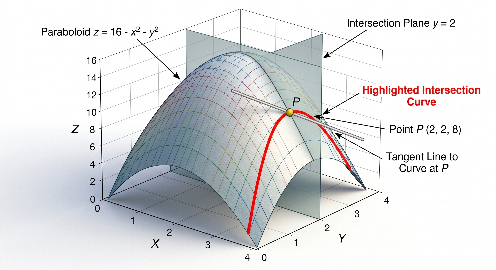

Nesta seção, apresentaremos o conceito de derivadas parciais para funções de várias variáveis. A ideia principal para derivar funções com duas ou mais variáveis é fazer uma análise considerando que apenas uma variável se modifica, enquanto todas as outras são mantidas constantes.
Para motivar este estudo, considere um parabolóide dado por \(z = 16 - x^2 - y^2\) e um plano \(y = 2\text{.}\) A intersecção destas superfícies resulta em uma curva \(C\) cuja equação é \(z = 12 - x^2\) (com \(y=2\)). A derivada parcial nos ajudará a calcular a inclinação da reta tangente a essa curva em um ponto específico.

Figura3.1.1.Curva resultante da intersecção do parabolóide com um plano
Outro exemplo prático envolve curvas de nível da temperatura \(T = T(t, h)\text{,}\) onde \(t\) é o tempo e \(h\) é a altitude. Podemos nos perguntar como a temperatura varia em relação ao tempo mantendo a altitude fixa, ou como ela varia em relação à altitude em um instante de tempo fixo.
Subseção3.1.1Definição Formal e Notações
Definição3.1.2.
Seja \(f: A \subseteq \mathbb{R}^2 \rightarrow \mathbb{R}\) uma função de duas variáveis \(z = f(x,y)\) e \((x_0, y_0) \in A\text{.}\)
A derivada parcial de \(f\) em relação a \(x\) no ponto \((x_0, y_0)\text{,}\) denotada por \(\frac{\partial f}{\partial x}(x_0, y_0)\text{,}\) é definida pelo limite:
Diversas notações são comumente utilizadas na literatura para representar as derivadas parciais de primeira ordem. Para a derivada em relação a \(x\text{:}\)
Na prática, podemos calcular as derivadas parciais usando as regras de derivação conhecidas para funções de uma variável. Para calcular \(\frac{\partial f}{\partial x}\text{,}\) tratamos a variável \(y\) como uma constante matemática e derivamos a função em relação a \(x\text{.}\) Da mesma forma, para calcular \(\frac{\partial f}{\partial y}\text{,}\) mantemos \(x\) constante e derivamos em relação a \(y\text{.}\)
Exemplo3.1.4.
Encontre as derivadas parciais de 1ª ordem da função \(f(x,y) = 2x^2y + 3xy^2 - 4x\text{.}\)
A interpretação geométrica das derivadas parciais está intimamente ligada às inclinações das retas tangentes às curvas de intersecção da superfície com planos coordenados paralelos.
Ao fixarmos \(y = y_0\text{,}\) a função \(f(x, y_0)\) representa uma curva \(C_1\) resultante da intersecção da superfície \(z = f(x,y)\) com o plano \(y = y_0\text{.}\) A inclinação (coeficiente angular) da reta tangente a esta curva \(C_1\) no ponto \(P = (x_0, y_0)\) é dada por:
Figura3.1.9.Interpretação geométrica da derivada parcial em relação a x
De maneira análoga, ao fixarmos \(x = x_0\text{,}\) obtemos uma curva \(C_2\text{.}\) A inclinação da reta tangente a \(C_2\) no ponto \(P\) é dada por:
Figura3.1.10.Interpretação geométrica da derivada parcial em relação a y
Subseção3.1.4Derivadas Parciais de Funções com Mais de Duas Variáveis
O conceito se estende naturalmente para funções de \(n\) variáveis \(f(x_1, x_2, \dots, x_n)\text{.}\) Para encontrar a derivada parcial em relação a \(x_i\text{,}\) mantemos todas as outras \(n-1\) variáveis constantes e derivamos normalmente em relação a \(x_i\text{.}\)
Exemplo3.1.11.
Calcule as derivadas parciais de 1ª ordem da função \(f(x, y, z, t, w) = xyz \ln(x^2 + t^2 + w^2)\text{.}\)
A função possui 5 variáveis, portanto, 5 derivadas parciais. Para calcular \(\frac{\partial f}{\partial x}\text{,}\) usamos a regra do produto e consideramos \(y, z, t, w\) constantes.